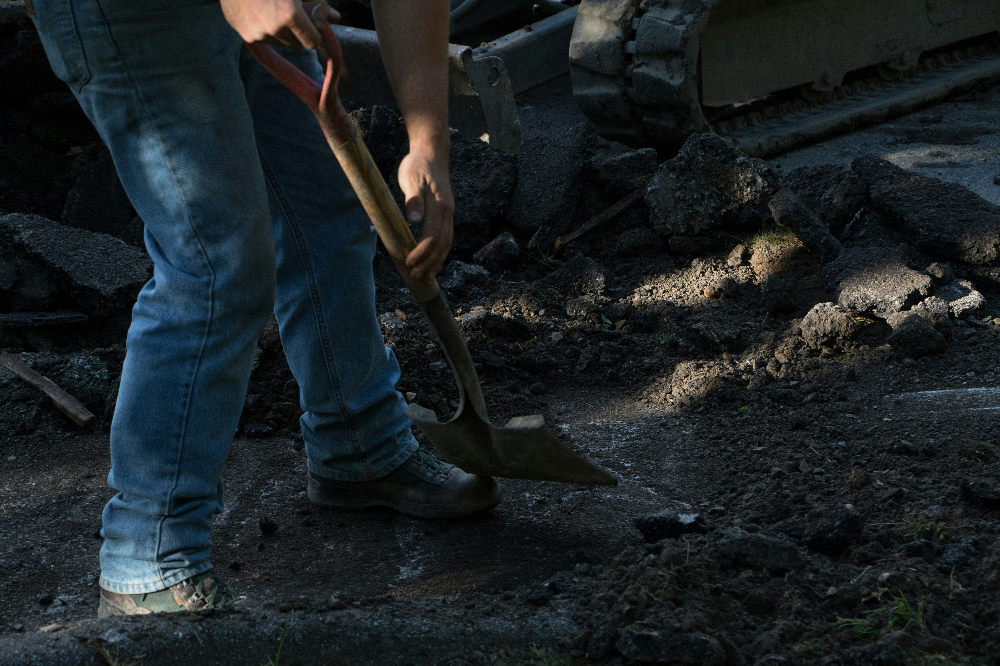
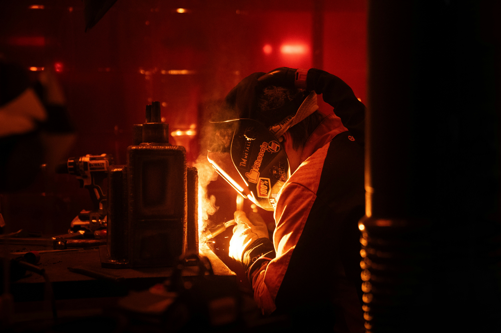
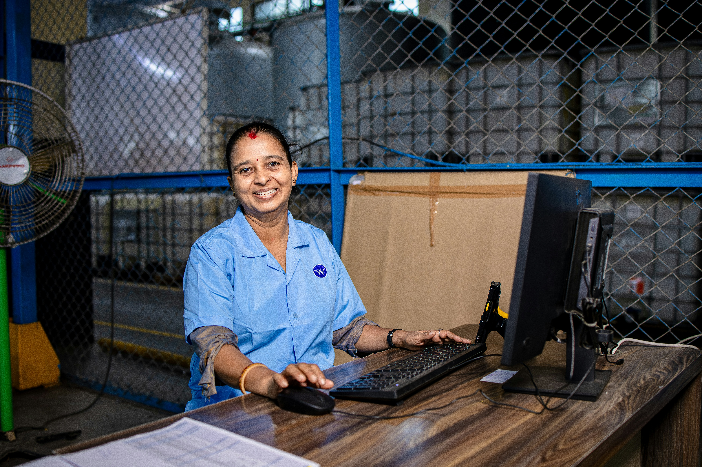
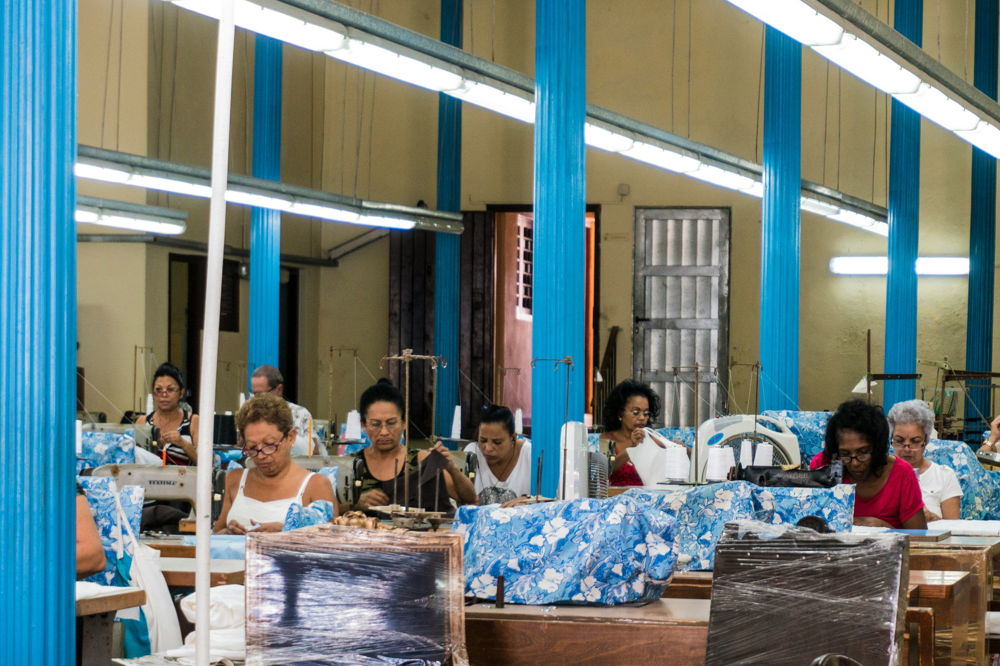
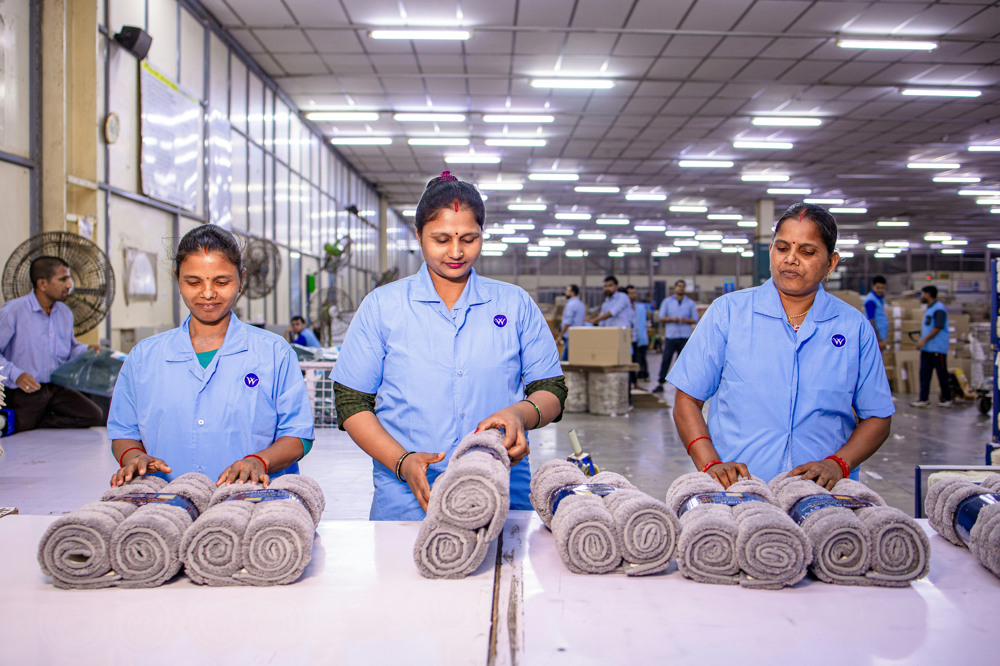
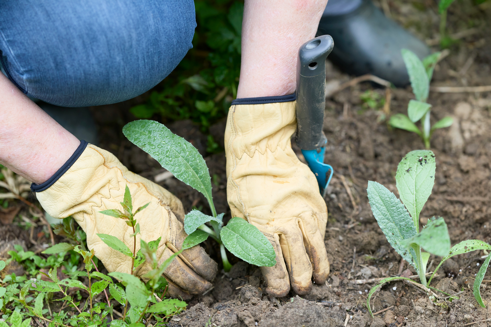
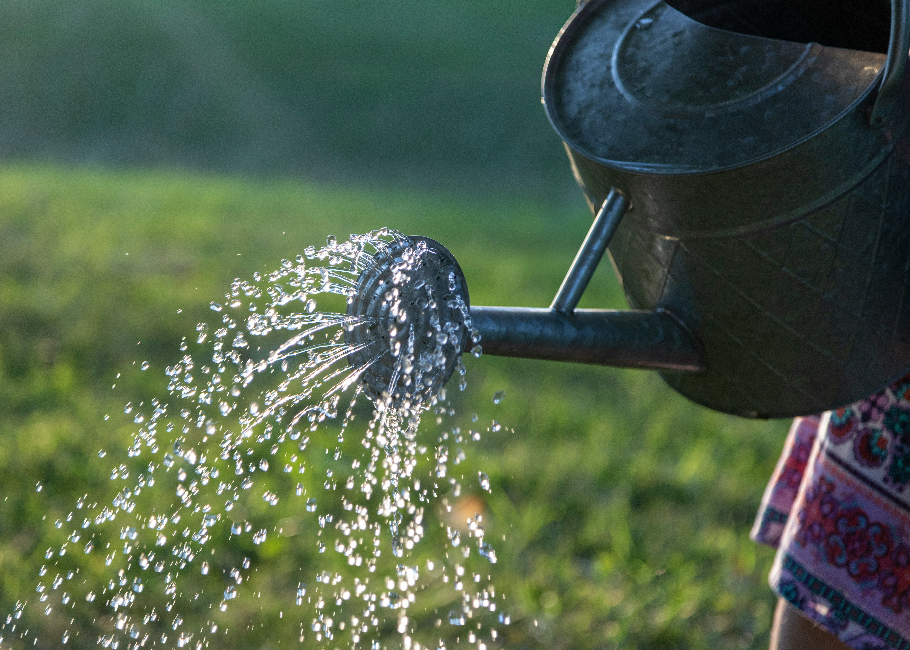

VAGAS ENCONTRADAS

Construção e Reparos Comunitários
Ajude em obras e melhorias de espaços comunitários, como reparos, preparação de terreno e manutenção de estruturas.
São Paulo - SP Construção
Oficina de Metalurgia e Soldagem
Auxilie em oficinas que capacitam jovens e adultos em um ofício técnico, apoiando a organização do espaço e acompanhando os alunos.
São Paulo - SP Capacitação
Apoio Administrativo
Colabore na rotina da organização: atendimento, cadastro de beneficiários e organização de documentos.
São Paulo - SP Administrativo
Oficina de Costura e Produção
Participe de uma oficina coletiva, ajudando no ensino e no acompanhamento de grupos que aprendem técnicas de confecção para geração de renda.
São Paulo - SP Geração de Renda
Produção Têxtil Cooperativa
Apoie uma equipe de costureiras em ambiente de trabalho em grupo, auxiliando na organização da produção e no treinamento de novos integrantes.
São Paulo - SP Cooperativismo
Horta Comunitária
Participe do plantio e cuidado de uma horta comunitária: preparo do solo, plantio de mudas e colheita para abastecer famílias da região.
São Paulo - SP Meio Ambiente
Irrigação e Cuidado com Plantações
Ajude na rotina de cuidado com as plantações: rega, monitoramento do crescimento e manutenção do espaço verde da comunidade.
São Paulo - SP Meio Ambiente